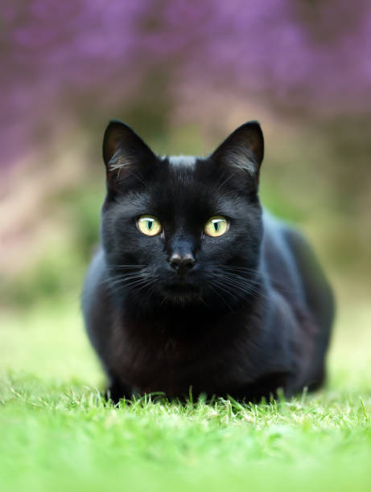

PET'S LOVE
Russian
Blue Cat

The first step to making your cat famous is by building a steady fan base on social media! You can start
by following other animas influencer and learn from what they do.
Don't stop at clicking photos of your cat in fun poses, wearing a cape and looking like he's ready to take
over the world! Push the creative boundaries to bring.